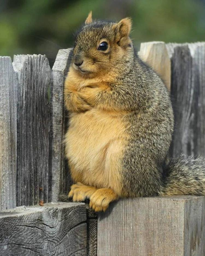

from fastai.vision.all import *
from fastdownload import download_url
from duckduckgo_search import ddg_images
def search_images(term, max_images=200): return L(ddg_images(term, max_results=max_images)).itemgot('image')Fruit Multi-Classifier pt.1 Training
Fruit Multi-Classifier
We will train a fruit classifier using multi-label classification. It is a part of further research part of fastbook chapter6. Instead of creating a bear classifier, we will classify three fruits: apple, orange, and pears.

Why fruits? While I was trying to find images on duckduckgo for teddy bear and grizzly bear together, I could not find them. On the other hand, I could find images with apple and pear easilly. I was also able to find many images with all three of them. Therefore, I chose fruits.
Import libraries and download data
We start importing fastai library and other functions we will use to search and download images.
We can define a function, search_show_image, which searches the term, download, and shows the image. This way, we can check whether we’re getting the right images.
def search_show_image(term, dest=None):
"""Search, download, and show the image from the url."""
url = search_images(term, max_images=1)[0]
if not dest: dest = term + '.jpg'
download_url(url, dest, show_progress=False)
im = Image.open(dest)
return im.to_thumb(256, 256)search_show_image('apple')search_show_image('orange')search_show_image('pear')We can have multiple categories in an image. We can either have two categories or all three!
search_show_image('apple and pear')search_show_image('apple and orange')search_show_image('pear and orange')search_show_image('apple and pear and orange')Another challenge is predicting “no fruit.” We can search random images and use that for this purpose.
search_show_image('random images')
Now we start downloading images. We search all possible combinations of labels.
path = Path('fruit_or_not')searches = ('apple','pear', 'orange',
'apple and pear', 'apple and orange', 'pear and orange',
'apple and pear and orange',
'random images')
from time import sleep
for o in searches:
dest = (path/o)
dest.mkdir(exist_ok=True, parents=True)
download_images(dest, urls=search_images(f'{o} photo'))
sleep(10) # Pause between searches to avoid over-loading server
resize_images(path/o, max_size=400, dest=path/o)/usr/local/lib/python3.9/dist-packages/PIL/Image.py:959: UserWarning: Palette images with Transparency expressed in bytes should be converted to RGBA images
warnings.warn(
/usr/local/lib/python3.9/dist-packages/PIL/Image.py:959: UserWarning: Palette images with Transparency expressed in bytes should be converted to RGBA images
warnings.warn(
/usr/local/lib/python3.9/dist-packages/PIL/Image.py:959: UserWarning: Palette images with Transparency expressed in bytes should be converted to RGBA images
warnings.warn(
/usr/local/lib/python3.9/dist-packages/PIL/Image.py:959: UserWarning: Palette images with Transparency expressed in bytes should be converted to RGBA images
warnings.warn(Check and get rid of failed images.
failed = verify_images(get_image_files(path))
failed.map(Path.unlink)
len(failed)17path.ls()(#8) [Path('fruit_or_not/pear'),Path('fruit_or_not/apple and orange'),Path('fruit_or_not/apple and pear and orange'),Path('fruit_or_not/apple'),Path('fruit_or_not/orange'),Path('fruit_or_not/apple and pear'),Path('fruit_or_not/random images'),Path('fruit_or_not/pear and orange')]DataBlock
Since we have data, we start building a datablock. Since this is a multi-label classification, we use MultiCategoryBlock, instead of CategoryBlock. Another different thing is get_y. We can use parent_label for the labels. We will get apple, pear, and orange. But we also have problems. We will also get apple and pear and orange, which does not mean all three images for the model. So, we use a list of categories for the label. For instance, we will use ['apple'] for apple, ['apple, 'pear', 'orange'] for all three.
So, we define a function, get_y, which splits the names. We could also have used lambda function here. However, if we want to export our learner and load it later for inference, we have to define a function this way.
def get_y(path):
return parent_label(path).split(' and ')
dblock = DataBlock(
blocks=(ImageBlock, MultiCategoryBlock),
get_items=get_image_files,
splitter=RandomSplitter(seed=42),
get_y=get_y,
item_tfms=[Resize(192, method='squish')]
)path.ls()(#8) [Path('fruit_or_not/pear'),Path('fruit_or_not/apple and orange'),Path('fruit_or_not/apple and pear and orange'),Path('fruit_or_not/apple'),Path('fruit_or_not/orange'),Path('fruit_or_not/apple and pear'),Path('fruit_or_not/random images'),Path('fruit_or_not/pear and orange')]By using dblock.summary(path), we can see exactly what’s going on behind the scenes. For y, we got [random images], which was turned into TensorMultiCategory([3]), and also into TensorMultiCategory([0., 0., 0., 1.]) with OneHotEncode.
dblock.summary(path)Setting-up type transforms pipelines
Collecting items from fruit_or_not
Found 1620 items
2 datasets of sizes 1296,324
Setting up Pipeline: PILBase.create
Setting up Pipeline: get_y -> MultiCategorize -- {'vocab': None, 'sort': True, 'add_na': False} -> OneHotEncode -- {'c': None}
Building one sample
Pipeline: PILBase.create
starting from
fruit_or_not/random images/a65bc8f7-8849-4207-ac8c-4a54bf119395.jpg
applying PILBase.create gives
PILImage mode=RGB size=400x300
Pipeline: get_y -> MultiCategorize -- {'vocab': None, 'sort': True, 'add_na': False} -> OneHotEncode -- {'c': None}
starting from
fruit_or_not/random images/a65bc8f7-8849-4207-ac8c-4a54bf119395.jpg
applying get_y gives
[random images]
applying MultiCategorize -- {'vocab': None, 'sort': True, 'add_na': False} gives
TensorMultiCategory([3])
applying OneHotEncode -- {'c': None} gives
TensorMultiCategory([0., 0., 0., 1.])
Final sample: (PILImage mode=RGB size=400x300, TensorMultiCategory([0., 0., 0., 1.]))
Collecting items from fruit_or_not
Found 1620 items
2 datasets of sizes 1296,324
Setting up Pipeline: PILBase.create
Setting up Pipeline: get_y -> MultiCategorize -- {'vocab': None, 'sort': True, 'add_na': False} -> OneHotEncode -- {'c': None}
Setting up after_item: Pipeline: Resize -- {'size': (192, 192), 'method': 'squish', 'pad_mode': 'reflection', 'resamples': (<Resampling.BILINEAR: 2>, <Resampling.NEAREST: 0>), 'p': 1.0} -> ToTensor
Setting up before_batch: Pipeline:
Setting up after_batch: Pipeline: IntToFloatTensor -- {'div': 255.0, 'div_mask': 1}
Building one batch
Applying item_tfms to the first sample:
Pipeline: Resize -- {'size': (192, 192), 'method': 'squish', 'pad_mode': 'reflection', 'resamples': (<Resampling.BILINEAR: 2>, <Resampling.NEAREST: 0>), 'p': 1.0} -> ToTensor
starting from
(PILImage mode=RGB size=400x300, TensorMultiCategory([0., 0., 0., 1.]))
applying Resize -- {'size': (192, 192), 'method': 'squish', 'pad_mode': 'reflection', 'resamples': (<Resampling.BILINEAR: 2>, <Resampling.NEAREST: 0>), 'p': 1.0} gives
(PILImage mode=RGB size=192x192, TensorMultiCategory([0., 0., 0., 1.]))
applying ToTensor gives
(TensorImage of size 3x192x192, TensorMultiCategory([0., 0., 0., 1.]))
Adding the next 3 samples
No before_batch transform to apply
Collating items in a batch
Applying batch_tfms to the batch built
Pipeline: IntToFloatTensor -- {'div': 255.0, 'div_mask': 1}
starting from
(TensorImage of size 4x3x192x192, TensorMultiCategory of size 4x4)
applying IntToFloatTensor -- {'div': 255.0, 'div_mask': 1} gives
(TensorImage of size 4x3x192x192, TensorMultiCategory of size 4x4)With dblock, we create datasets. Before we move onto the next step, we take a look at x and y to actually check they look okay. We also check vocab.
dsets = dblock.datasets(path)len(dsets)1620x, y = dsets[550]x.to_thumb(256, 256)yTensorMultiCategory([1., 0., 0., 0.])dsets.vocab['apple', 'orange', 'pear', 'random images']Everything looks good, so we move on to dataloaders. We can use show_batch to take a look at images and labels respectively.
dls = dblock.dataloaders(path)
dls.show_batch()Some images may not be right since we downloaded them from a search engine. The best way to find out whether it will work or not is just start training and see how it performs!
learn = vision_learner(dls, resnet18, metrics=accuracy_multi)
learn.lr_find()/usr/local/lib/python3.9/dist-packages/torchvision/models/_utils.py:208: UserWarning: The parameter 'pretrained' is deprecated since 0.13 and will be removed in 0.15, please use 'weights' instead.
warnings.warn(
/usr/local/lib/python3.9/dist-packages/torchvision/models/_utils.py:223: UserWarning: Arguments other than a weight enum or `None` for 'weights' are deprecated since 0.13 and will be removed in 0.15. The current behavior is equivalent to passing `weights=ResNet18_Weights.IMAGENET1K_V1`. You can also use `weights=ResNet18_Weights.DEFAULT` to get the most up-to-date weights.
warnings.warn(msg)
Downloading: "https://download.pytorch.org/models/resnet18-f37072fd.pth" to /root/.cache/torch/hub/checkpoints/resnet18-f37072fd.pthSuggestedLRs(valley=0.0010000000474974513)learn.fine_tune(5, 0.01)| epoch | train_loss | valid_loss | accuracy_multi | time |
|---|---|---|---|---|
| 0 | 0.661995 | 0.422173 | 0.854167 | 00:07 |
| epoch | train_loss | valid_loss | accuracy_multi | time |
|---|---|---|---|---|
| 0 | 0.313802 | 0.438793 | 0.861883 | 00:08 |
| 1 | 0.226740 | 0.426513 | 0.868056 | 00:08 |
| 2 | 0.166382 | 0.364287 | 0.891975 | 00:08 |
| 3 | 0.119406 | 0.320120 | 0.905093 | 00:08 |
| 4 | 0.086154 | 0.311800 | 0.903549 | 00:08 |
We can optionally try to find the optimal value for thresh keyword, but it’s good where we are.
preds, targs = learn.get_preds()xs = torch.linspace(0.1, .9, 30)
ys = [accuracy_multi(preds, targs, thresh=i, sigmoid=False) for i in xs]
plt.plot(xs, ys);Let’s find out what our model had trouble with.
interp = ClassificationInterpretation.from_learner(learn)
# interp.plot_confusion_matrix()interp.plot_top_losses(15, nrows=3)| target | predicted | probabilities | loss | |
|---|---|---|---|---|
| 0 | random images | apple | TensorBase([0.9999, 0.0204, 0.0098, 0.0011]) | 3.993837356567383 |
| 1 | apple | random images | TensorBase([2.5680e-03, 1.7837e-03, 4.3446e-04, 9.9994e-01]) | 3.9354634284973145 |
| 2 | apple | orange;pear | TensorBase([1.1798e-03, 9.8064e-01, 9.0787e-01, 4.7235e-04]) | 3.2679762840270996 |
| 3 | apple;orange | apple;orange;pear | TensorBase([9.9813e-01, 9.9998e-01, 9.9999e-01, 7.8886e-05]) | 2.7811737060546875 |
| 4 | apple;pear | orange | TensorBase([2.5644e-01, 9.9927e-01, 8.3681e-02, 3.2027e-04]) | 2.765456199645996 |
| 5 | apple;orange | apple;pear | TensorBase([9.7966e-01, 2.2211e-02, 9.9570e-01, 2.1652e-04]) | 2.319033622741699 |
| 6 | apple;orange | apple | TensorBase([1.0000e+00, 1.2407e-04, 5.8573e-04, 9.8804e-05]) | 2.248845338821411 |
| 7 | apple;orange | pear | TensorBase([0.4713, 0.4008, 0.9990, 0.0017]) | 2.1484780311584473 |
| 8 | apple;pear | apple;orange | TensorBase([8.5449e-01, 5.0590e-01, 7.0017e-04, 2.9679e-03]) | 2.032358407974243 |
| 9 | apple;pear | orange;pear | TensorBase([3.6480e-03, 8.5574e-01, 9.9771e-01, 7.9937e-04]) | 1.8881945610046387 |
| 10 | apple;orange | random images | TensorBase([0.2633, 0.0248, 0.0345, 0.9077]) | 1.862053394317627 |
| 11 | orange;pear | apple;orange | TensorBase([9.9609e-01, 9.9997e-01, 2.2600e-01, 3.7492e-04]) | 1.7576959133148193 |
| 12 | orange;pear | apple;orange;pear | TensorBase([0.9990, 0.9999, 1.0000, 0.0012]) | 1.729599118232727 |
| 13 | apple | random images | TensorBase([0.0842, 0.0110, 0.0195, 0.9838]) | 1.6565606594085693 |
| 14 | orange | orange;pear | TensorBase([0.0480, 0.9988, 0.9984, 0.0012]) | 1.628658652305603 |
It looks like our model is doing pretty good. The ones it missed are not correctly labelled or hard to figure out myself. We can test some images we downloaded in the beginning of this notebook
is_fruit,_,probs = learn.predict(PILImage.create('apple.jpg'))
is_fruit(#1) ['apple']is_fruit,_,probs = learn.predict(PILImage.create('random images.jpg'))
is_fruit, probs((#1) ['random images'],
TensorBase([2.0158e-03, 4.0127e-04, 5.0894e-04, 1.0000e+00]))Looks good! We are ready to deploy it!
learn.export()path = Path()
path.ls(file_exts='.pkl')(#1) [Path('export.pkl')]